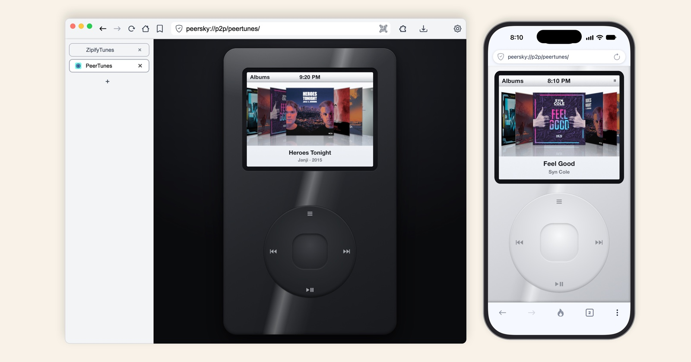
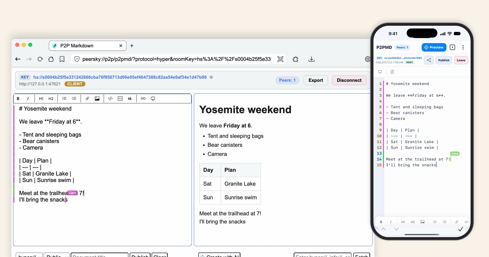
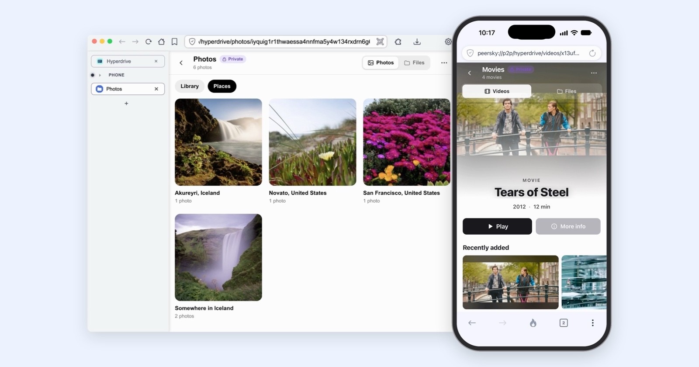
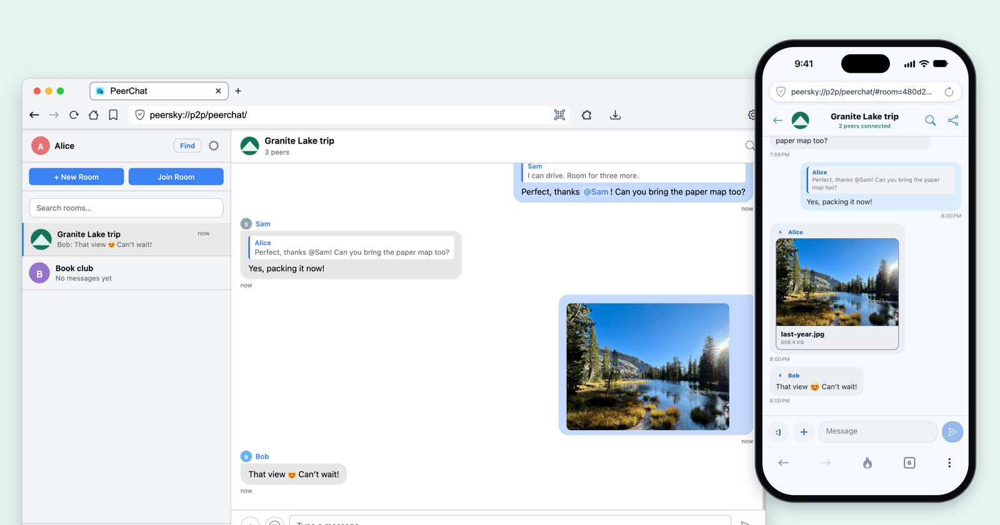

-

Replace your music streaming app with songs you own
PeerTunes plays songs you keep as files, on your computer and your phone. They move straight between your devices with no cloud in between, and play anywhere, even with no signal.
-

Notes you write together in P2PMD, with no server in between
With P2PMD, many people write one Markdown note at once from their phones and computers. The note lives on the device that hosts it, not on a server.
-

Use any spare device as your private cloud with PeerSky
Link an old laptop or phone once, and your private files show up on it on their own, encrypted. Only your devices can open them.
-

Chats that live on your devices, not on a server
How PeerChat runs private chats with no server: devices pass messages on, sign every one, change keys every hour and moderate rooms themselves.